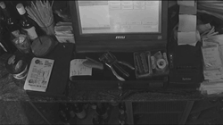
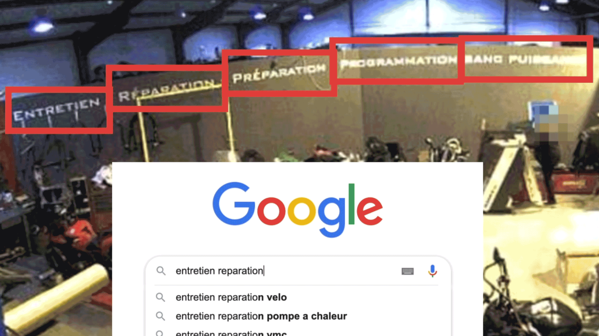
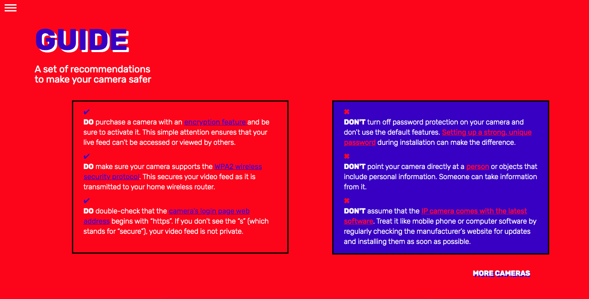

ABOUT
THE PROJECT
I SEE YOU is a project developed during the Final Synthesis
Laboratory in Density Lab at the Politecnico di Milano.
This project is an extension of protocol 3 from phase II, which highlighted what’s being captured by the most recent cameras on
a website called Insecam. During that phase we collected different videos of different countries to show the variety between them and the relevance of the content.
I SEE YOU, showcases six different stories of leaked security camera footage found on Insecam, each from a different country. It takes
the audience through an informative and interactive journey of
easily tracing the exact location, name and contact details of the owner of the camera. It further provides an opportunity to the audience to inform the owner about their privacy being at risk.
The journey ends with a guide that presents a set of tips to make
the cameras safer.
AIM, FOCUS AND OBJECTIVE
The aim of this project is to inform the audience that the security camera feed can be easily tracked through simple online tools in
just a few clicks with a simple language and real content.
The project is centered on the use of security cameras and the possible bad consequences of their use. It focus on a specific audience: existing or potential owners of security cameras and
people who are directly or indirectly under camera vigilance.
The main objective of the project is to reflect the vulnerability of cameras that is often more pervasive than expected. People use cameras to feel safe, but paradoxically end up putting their
privacy and security at risk. With this project we want to inform,
warn and provoke a direct response in the audience.
MESSAGE
Surveillance cameras are becoming part of our daily lives all around the world. How would you feel if you knew that someone can watch you in another country and discover where you live or work?
Showing unauthorized access to these videos, the direct message
is the vulnerability of these cameras and the ignorance of their possible misuse. How can a security device invert the roles of
security and become a window to the personal world?
THE PROCESS AND TOOLS USED
The entire research and execution process has been carried out manually. We picked 6 videos of different countries and locations
as a bar in Italy, a motorcycle shop in France, a fast-food restaurant
in the USA, or a supermarket in Brasil. We created a video for each
one to document the process of tracing these cameras.
First, we observed cameras in different countries, analysing them
and looking at specific details that made us find the location.

We used platforms like Google Search, Google Maps, Trip Advisor, Facebook and others to search the location of the cameras and
obtain supporting evidence to re-check the correct address.
Through the exact location or name of the place, it becomes very
easy to obtain their contact information online.
With a single search it was possible to obtain all the data of the place, including schedules, telephone and pictures that allow us to confirm the location.
After we obtained data as the phone number, we decided to call them to confirm the camera location and to advise the owners of the open camera. As we choose different countries we called in the local language and we added English subtitles in the video. It is interesting to note the different kind of response and reactions that people have to the situation.
Some are shocked or frightened whereas some think this is a prank and hang up the call. These reactions resonates with the fact that
the people are unaware of this situation and therefore it requires urgent attention.

During some steps of the videos, the user is asked if they want to continue to watch the video or prefer to maintain people’s privacy.
Some changes were made on the conversation audio and even if it removes a little bit the reality effect from the video, our main concern was to protect the anonymity of the person in cause . At the end of the video, there is an explanation of the main reactions during the phone call and if after one week , our call caused or not a change in the behaviour .
These are the videos of the process
Sassari, SS, Italy
Buenos Aires, BA, Argentina
Billy-Montigny, HDF, France
Gastonia, NC, USA
Erechim, RS, Brazil
Oviedo, AST, Spain
VISUAL LANGUAGE
The digital language is reused in a very simple, real and raw manner that helps the audience to actually experience a real life situation.
For example, exact shots are taken from websites like Google Maps and Trip Advisor.

It provokes a feeling of taking proactive measures to prevent unauthorized access of security cameras. Sound effects are an important part of the project. It makes it interesting and provides
a real feel to the audience. The combination of data, visual, text
and interaction helps the audience to be more conscious about privacy concerns and acts as torchbearers to spread awareness.
DATA SOURCE
Insecam, is an online directory of surveillance security cameras.
It displays unsecured cameras from all around the world categorized
by location, country, city, popularity or tags. These cameras are either streaming on publicly accessible network ports or are still using the default passwords, thereby allowing anyone to gain access to the stream. One can easily see the live feed of these open cameras as their brand, latitude and longitude (IP address of security camera).
The material shown in the project has been collected and edited directly for us. It’s possible to access to part of the content here.
The data regarding the website is available here.
INTERACTIONS
In the main page, it’s possible to choose between the 6 different videos and decide with which story to begin. Moreover, when the video is finished, it’s possible to go back and watch the other videos.
At various steps the audience is given the possibility to either keep going deeper in the data breach or to opt out. The idea is to actively involve and engage the audience while transmitting the idea of
doing something “not allowed”. Giving the option to not continue
also tries to give the user the possibility to continue or respects
other’s privacy.
After the last video of the research process, we present to the reader the possibility to call to the camera's owner. By making the audience feel that they will be able to contact the camera owners, we present
a set of suggestions on how to proceed in this kind of situations during the call.
This step is an attempt to make the audience more engaged
with the project and give them the possibility to call to another cameras to warn the owners about the breach. These suggestions make sure that the audience convey the message to the security camera owner in the best way possible, preparing the readers to spread awareness regarding to security cameras vulnerability.
By doing this the message is reached and absorbed by both the audience and the camera owner.

At the end, we present our last video, that provides a phone call made by us to the respective owner or employee of the establishment.
The edit of the call was made due to privacy reasons.
SECURITY GUIDE
In order to further help the audience to avoid this unauthorized access of cameras, we developed a list of security advises to prevent this situations. Simple tips as putting a strong password or to not use the default password, can reduce the risk of data breach and security.
This guide will appear directly when the video of the call finish, allowing the audience to check the best ways to protect cameras.

A PRIVACY NOTE
During the entire process there are some details we decided to hide to respect people's privacy. For example, pixelating/blurring the person’s face, voice or contact details .